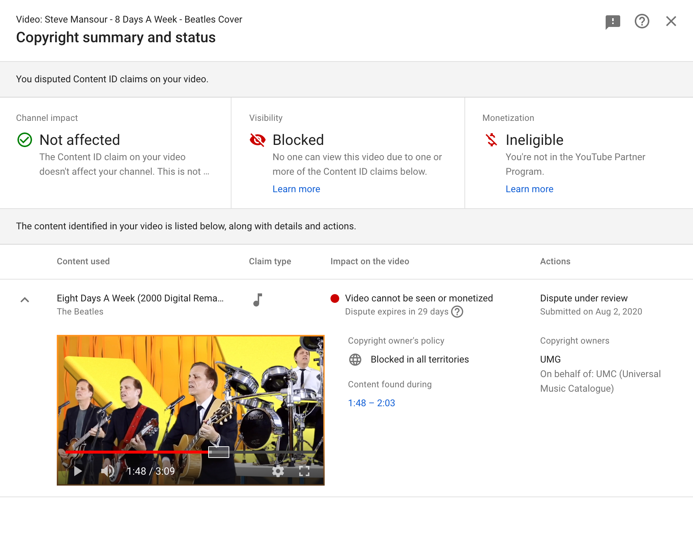

|
I just finished up a video where I covered Eight Days A Week by the Beatles.
I uploaded the video and within seconds I got flagged with a copyright
infringement. Their claim is that the audio from 1:48 to 2:03 is taken
from the Beatles 2000 Digital Remaster of Eight Days A Week. I thought this
has to be a joke, but it was not. The video was banned in all countries.

Of course this is not true, I did all the tracks. If you listen to the song,
even in the area from
1:48 - 2:03, you will clearly hear that it is not the Beatles. Maybe I should
feel good that it was mistaken for the Beatles recording? But I don't, it
feels bad.
I filed a dispute, offering to give them a copy of my audio recordings of
each track prior to mixing the final version used in the video. But if the
copyright owners just listen to it they should be able to hear that it is not
the Beatles. Who knows
where this will land? I hope they remove the dispute. I really wanted to
post this for all to see/hear. Here's a link to the video, see for yourself.
|